Last update: 05/10/2020 00:27:04 (12 figures)
bar_val_hard_00000191.png
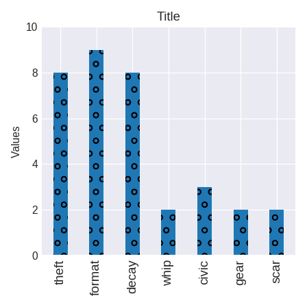
The chart does not have a meaningful title. Seven bars are there. The bars are vertical. Whip is the label of the fourth bar from the left. Scar is the label of the seventh bar from the left. Gear is the label of the sixth bar from the left. Decay is the label of the third bar from the left. Format is the label of the second bar from the left. Civic is the label of the fifth bar from the left. Theft is the label of the first bar from the left. Format, has the largest value. The value of gear is smaller than decay. The value of whip is smaller than decay. The value of civic is smaller than decay. The value of decay is smaller than format. The value of scar is smaller than decay. 2 is the value of gear. 2 is the value of whip. 2 is the value of scar. 8 is the value of theft. 8 is the value of decay.
bar_val_hard_00000299.png
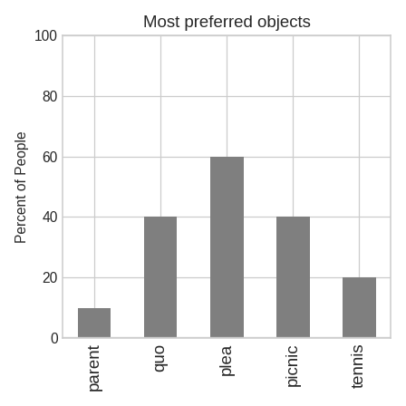
The chart lists the most favorable objects. Five bars are there. The bars are vertical. Quo is the label of the second bar from the left. Parent is the label of the first bar from the left. Tennis is the label of the fifth bar from the left. Plea is the label of the third bar from the left. Picnic is the label of the fourth bar from the left. Plea, is the most preferred. The object quo is preferred by more people than picnic. The object quo is preferred by more people than parent. The object quo is preferred by less people than plea. The object plea is preferred by more people than parent. The object quo is preferred by more people than tennis. 40 is the value of quo. 40 is the value of picnic. 20 is the value of tennis. 60 is the value of plea.
bar_val_hard_00002697.png
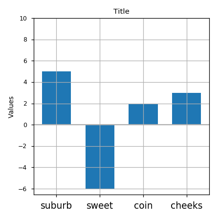
The chart does not have a meaningful title. Four bars are there. The bars are vertical. Suburb is the label of the third bar from the left. Cheeks is the label of the fourth bar from the left. Suburb is the label of the first bar from the left. Suburb is the label of the second bar from the left. Sweet, has the largest value. The value of coin is smaller than suburb. The value of coin is smaller than cheeks. The value of sweet is smaller than cheeks.
bar_val_hard_00003112.png
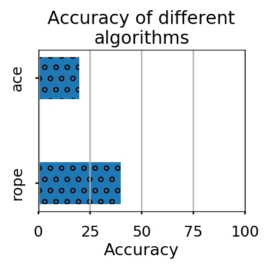
The chart reports accuracy (percentage of correct prediction) of different algorithms. Two bars are there. The bars are horizontal. Accuracy of different algorithms is the label of the first bar from the bottom. Ace is the label of the second bar from the bottom. Rope, has the highest accuracy. The accuracy of the algorithm rope is larger than ace.
bar_val_hard_00003418.png
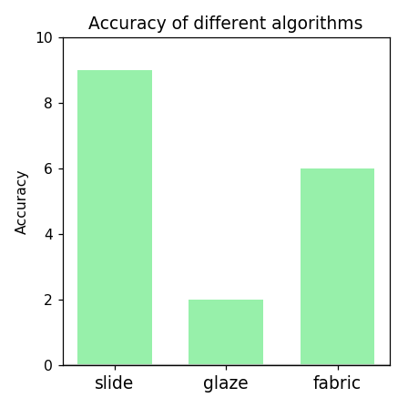
The chart reports accuracy (percentage of correct prediction) of different algorithms. Three bars are there. The bars are vertical. Fabric is the label of the third bar from the left. Slide is the label of the first bar from the left. Glaze is the label of the second bar from the left. Slide, has the highest accuracy. The accuracy of the algorithm fabric is smaller than slide. The accuracy of the algorithm glaze is smaller than slide. The accuracy of the algorithm glaze is smaller than fabric. 6 is the accuracy of the algorithm fabric. 2 is the accuracy of the algorithm glaze.
bar_val_hard_00003442.png
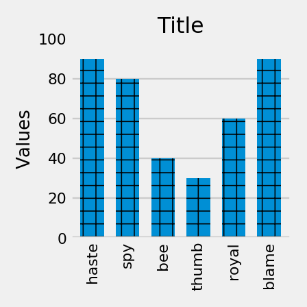
The chart does not have a meaningful title. Six bars are there. The bars are vertical. Haste is the label of the first bar from the left. Bee is the label of the third bar from the left. Blame is the label of the sixth bar from the left. Royal is the label of the fifth bar from the left. Spy is the label of the second bar from the left. Thumb is the label of the fourth bar from the left. The value of haste is larger than spy. The value of blame is larger than spy. The value of spy is larger than thumb. The value of spy is larger than royal. The value of spy is larger than bee. 20 is the value of bee. 80 is the value of spy. 60 is the value of royal.
bar_val_hard_00003958.png
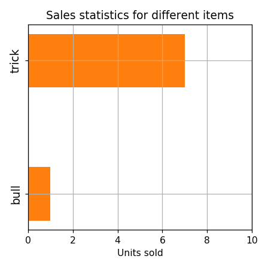
The chart compares sales stats among different products. Two bars are there. The bars are horizontal. Bull is the label of the first bar from the bottom. Trick is the label of the second bar from the bottom. Trick, sold the most units. The item bull sold less units than trick.
bar_val_hard_00003965.png
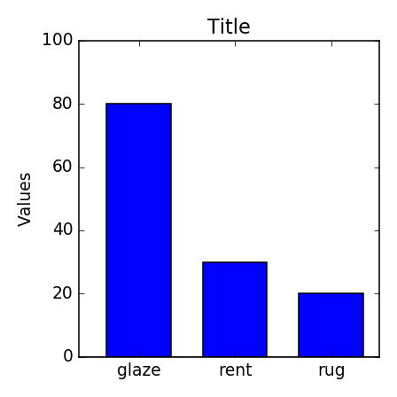
The chart does not have a meaningful title. Three bars are there. The bars are vertical. Rug is the label of the third bar from the left. Rent is the label of the second bar from the left. Glaze is the label of the first bar from the left. Glaze, has the largest value. The value of glaze is larger than rug. The value of rent is larger than rug. The value of glaze is larger than rent. 20 is the value of rug. 80 is the value of glaze.
bar_val_hard_00004310.png
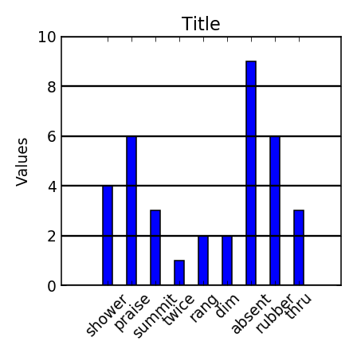
The chart does not have a meaningful title. Nine bars are there. The bars are vertical. Summit is the label of the eighth bar from the left. Twice is the label of the seventh bar from the left. Absent is the label of the fourth bar from the left. Absent is the label of the third bar from the left. Rubber is the label of the second bar from the left. Shower is the label of the sixth bar from the left. Thru is the label of the first bar from the left. Praise is the label of the fifth bar from the left. Rang, has the largest value. The value of thru is larger than rang. The value of absent is larger than thru. The value of thru is larger than dim. The value of rubber is larger than thru. The value of thru is larger than twice. 2 is the value of rang. 2 is the value of dim. 4 is the value of shower. 8 is the value of rubber. 6 is the value of praise.
bar_val_hard_00005007.png
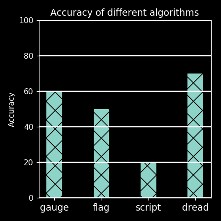
The chart reports accuracy (percentage of correct prediction) of different algorithms. Four bars are there. The bars are vertical. Script is the label of the third bar from the left. Flag is the label of the second bar from the left. Dread is the label of the fourth bar from the left. Gauge is the label of the first bar from the left. Dread, has the highest accuracy. The accuracy of the algorithm gauge is larger than flag. The accuracy of the algorithm dread is larger than script. The accuracy of the algorithm dread is larger than gauge. The accuracy of the algorithm dread is larger than flag. The accuracy of the algorithm flag is larger than script. The accuracy of the algorithm gauge is larger than script. 80 is the accuracy of the algorithm gauge. 0 is the accuracy of the algorithm script.
bar_val_hard_00006166.png
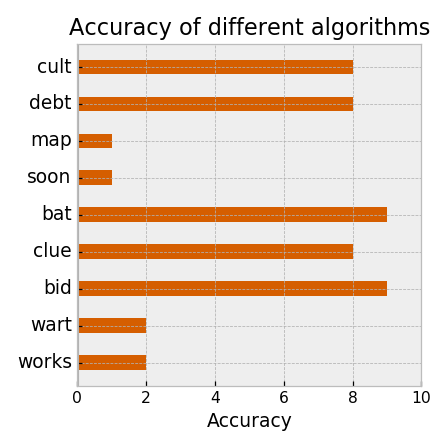
The chart reports accuracy of different algorithms. Nine bars are there. The bars are horizontal. Wart is the label of the second bar from the bottom. Works is the label of the first bar from the bottom. Clue is the label of the fourth bar from the bottom. Soon is the label of the sixth bar from the bottom. Debt is the label of the eighth bar from the bottom. Map is the label of the seventh bar from the bottom. Bat is the label of the fifth bar from the bottom. Bid is the label of the third bar from the bottom. Bid, has the highest accuracy. The accuracy of the algorithm cult is smaller than bid. The accuracy of the algorithm map is smaller than cult. The accuracy of the algorithm cult is larger than bat. The accuracy of the algorithm wart is smaller than cult. The accuracy of the algorithm soon is smaller than cult. 2 is the accuracy of the algorithm works. 8 is the accuracy of the algorithm clue. 8 is the accuracy of the algorithm cult. 4 is the accuracy of the algorithm wart. 8 is the accuracy of the algorithm debt.
bar_val_hard_00008103.png
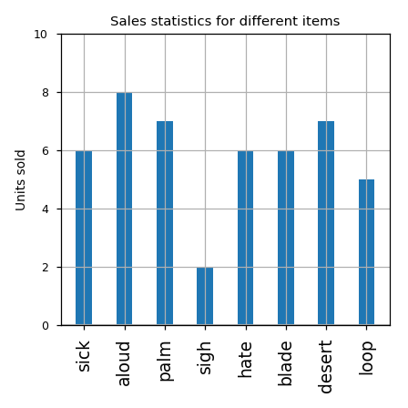
The chart compares sales stats among different products. Eight bars are there. The bars are vertical. Aloud is the label of the second bar from the left. Desert is the label of the seventh bar from the left. Sigh is the label of the fourth bar from the left. Hate is the label of the fifth bar from the left. Palm is the label of the third bar from the left. Blade is the label of the sixth bar from the left. Sick is the label of the first bar from the left. Loop is the label of the eighth bar from the left. Aloud, sold the most units. The item sigh sold less units than sick. The item aloud sold more units than hate. The item sigh sold less units than palm. The item sigh sold less units than hate. The item sigh sold less units than blade. The item sigh sold less units than aloud.